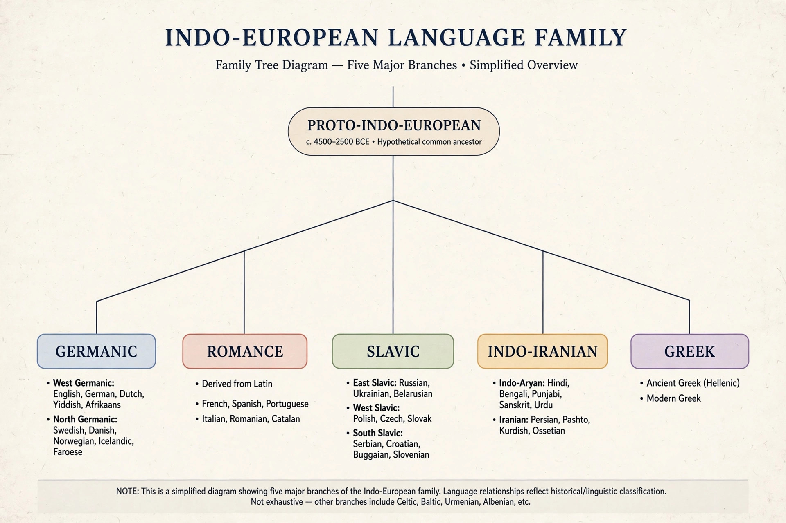

| Historical linguistics | |
|---|---|
| Also called | Diachronic linguistics; philology (older usage) |
| Key figures | William Jones, Jacob Grimm, Rasmus Rask, August Schleicher, Ferdinand de Saussure, Karl Verner |
| Core methods | Comparative method, internal reconstruction, study of sound change |
| Main object | Language change over time; reconstruction of proto-languages |
Historical linguistics, also termed diachronic linguistics, is the scientific study of language change over time. Its principal concerns include describing and accounting for observed changes in particular languages; reconstructing the prehistory of languages and determining their relatedness, grouping them into language families; developing general theories about how and why language changes; describing the history of speech communities; and studying the history of words — etymology.
Historical linguistics was arguably the founding discipline of modern linguistics: in the 19th century, before the synchronic turn associated with Ferdinand de Saussure, the study of language was overwhelmingly the study of its history.
The discipline is often dated from 1786, when Sir William Jones, a judge and philologist in Calcutta, observed that Sanskrit bore to Greek and Latin "a stronger affinity... than could possibly have been produced by accident", and suggested all three had "sprung from some common source, which, perhaps, no longer exists". In the following decades Rasmus Rask, Jacob Grimm, and Franz Bopp worked out systematic correspondences among the Indo-European languages; Grimm formulated the consonant shift now known as Grimm's law. August Schleicher drew the first family trees of languages and attempted reconstructions of Proto-Indo-European. In the 1870s the Neogrammarians of Leipzig advanced the influential claim that sound laws admit no exceptions — apparent exceptions, such as those resolved by Verner's law, reflect conditioning factors not yet discovered. Saussure, himself a historical linguist who as a young man proposed the laryngeal theory later vindicated by Hittite, drew the synchronic/diachronic distinction that reorganised the field in the 20th century.

The comparative method establishes that languages are related and reconstructs features of their common ancestor, the proto-language. Linguists assemble sets of cognates — words inherited from the same ancestral form — and identify regular sound correspondences between languages. Because sound change is regular, correspondences recur across the vocabulary: English words beginning with f systematically match Latin words beginning with p (foot/pes, fish/piscis, father/pater), reflecting a prehistoric change in Germanic. Where direct comparison is impossible, internal reconstruction infers earlier stages from alternations within a single language. The method reliably reaches back roughly 6,000–10,000 years; beyond that, the signal of relatedness is generally held to be unrecoverable, and proposals for macro-families such as Nostratic remain controversial.
Sound change is the most regular and best understood type of linguistic change. Famous examples include Grimm's law in Germanic, the Great Vowel Shift in English (which raised and diphthongised the long vowels between about 1400 and 1700), and the palatalisation of velar consonants in the history of many families. Changes may be conditioned by phonetic environment or unconditioned, and may proceed by lexical diffusion through the vocabulary. Analysing them is possible because communities apply them consistently — the Neogrammarian regularity hypothesis — with analogy later reshaping irregular outcomes.
Applying the comparative method yields reconstructed proto-languages such as Proto-Indo-European, Proto-Germanic, Proto-Slavic, and Proto-Bantu, whose forms are written with an asterisk to mark them as unattested. Reconstruction is necessarily partial — it recovers distinctions that left traces in the daughters, not a complete spoken language. Historical linguistics also informs archaeology and genetics through debates over homelands and migrations, such as the steppe (Kurgan) hypothesis for Indo-European, and contributes to documenting and reconstructing the histories of languages now dead or undergoing extinction.